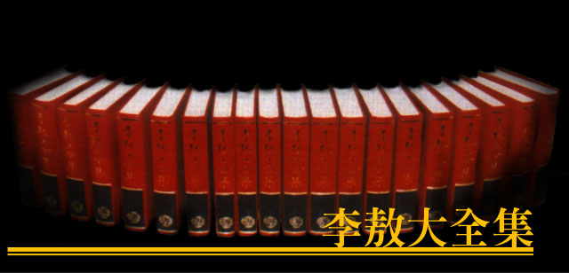

|

( 代序 ) 略
引子——巫醫與西潮
中國的醫學史，並不是什麼真的「醫學」史，而是一筆道道地地的「巫醫」史。 換句話說，不太客氣的說，中國歷史上，根本沒有真正的「醫學」。 中國傳統上關於「醫」的記載，最早的是神農、黃帝等的假歷史，後來年代較近，產生了所謂「醫」的始祖「彭」與「咸」，就是屈原所謂的「吳將從彭咸之所居」的「彭」與「咸」。 所謂彭咸，根本統統是「巫醫」。我們查查古書，很容易就看到： 「世本」：「巫彭作醫。」（「山海經」海內經注引） 「呂覽」：「巫彭作醫。」（「勿窮」） 「說文」：「占者巫彭初作醫。」 「世本」：「巫咸初作醫。」 （「玉海」六三引） 「世本」：「巫咸堯臣，以鴻術為帝堯之醫。」 「大荒西經」：「有靈山：巫咸巫即巫盼巫彭巫姑巫真巫禮巫抵巫謝巫羅，十巫從此升 降，百藥爰在。」 「海內西經」：「巫彭巫抵巫陽巫履巫凡巫相，夾＊窳之尸皆操不死之藥以距之。」 可見「巫」和「醫」兩者，根本就是不分家的。換句話說，中國古代的所謂「醫」，根本就是神醫、就是「巫」、就是「迷信」的另一個名字！ 「巫彭」與「巫咸」是殷商時代的人物。從這兩個所謂鼻祖以下，中國歷代都有所謂新一代——進化的、改良的一代——人物出現，都據說是愈來愈不「巫」了，愈來愈「醫」了，其實都是扯淡！他們不論怎麼改來改去，不論是什麼「華陀再世」「歧伯復生」都統統屬於萬世一系的巫醫系統。這個系統，直延伸到中華民國五十四年的所謂「中醫學院」，還沒有斷子絕孫，還是整年有數不盡的小「華陀」小「歧伯」出現，出現在這個可憐的國家，禍害這個可憐的民族，使他們吃樹根草藥、吞蟲屎黑湯。 但是，這個世界究竟不完全是「中華帝國」的世界，這個世界上畢竟還有進步的國家，有不吃樹根草藥、不吞蟲屎黑湯的民族，他們的進步與擴張，終於慢慢擠進了巫醫成群的東方古國，並且使十七世紀的中國康熙皇帝，首先嚥下了治療瘧疾的苦藥丸。 中國的「御醫」們治不好皇帝的瘧疾病，這只是一個在西方醫生面前失敗的開始；而西方醫生們此後的努力，也因這個事件而形成一個轉淚。從此以後，西化醫學的開始進口，也就愈來愈順利了。 西元一八○五年，英國東印度公司的外科醫生皮爾遜（ Alexander Pearson），進口了種牛痘的法子，使中國人開始少了一些麻哥；十五年後（一八二○），這個公司的又一個外科醫生李溫斯敦（LivingStone），與第一個基督教傳教士馬禮遜（Robert Morrison），進口了一家施藥局，為中國人治療了一些病痛；再過了七年（一八二七），還是這個公司的醫生郭雷樞（T.R.Colledge）比較大規模的進口了醫療的工作，為中國人拓開了不少醫學上的眼光。 這個郭雷樞醫生，是最能了解治病有助於傳教的人，所以他乾脆發表了一篇論文——「對用醫生來在中國傳教的提議」（Suggestions with Regard to Employing Medical Practitioners as Missionaries to China），這個提議，很受西方人的重視。到了一八三四年，終於第一個傳教醫生（missionary doctor）和中國人見面了，他，不是別人，就是中國第一個西方醫鈕、廣州「博濟醫院」（Canton Hospital）的創辦人——伯駕（Peter Parker）醫生。在伯駕醫生創辦「博濟醫院」整整半個世紀後的第一年（一八八六），一個不到二十歲的中國青年人走近這個醫院，開始努力學做一個西化的醫生，他，不是別人，就是孫逸仙。 孫逸仙在這個醫院裏，曾經學會了一句開玩笑的禪話，叫做「有而不有，不有而有」。當他用這句禪話來向同學開玩笑的時候，他絕沒想到，他此後的生涯，竟是應了這八個字的偈語：——花了前後六年的日子去學醫，最後又把它拋棄，這不正正是「有而不有」嗎？本來認為中國的「膏肓之病」不能除去，而要「匿跡於醫術」，最後又重拾素願，「致力國民革命」，使「中華帝國」變成「中華民國」，這不正正是「不有而有」嗎？ 「西醫與革命」，它不該只是一本歷史，而該兼有一種思想指南的身分。它告訴人們一個「有而不有」的具體例子，又給人們一個「不有而有」的明顯希望。讀了這本書的人，應該把它當作一支指針，在西化的浩蕩潮流裡，隨時校正它的導向。 |